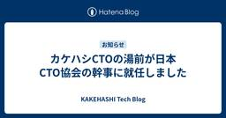

KAKEHASHI Tech Blog
https://kakehashi-dev.hatenablog.com/
カケハシのEngineer Teamによるブログです。
フィード
一休の伊藤直也氏に聞く、フルベットしない技術ポートフォリオ戦略 〜実践から学ぶ、医療変革プラットフォーマーの次なる一手〜 244
244
KAKEHASHI Tech Blog
カケハシでの社内講演に、株式会社一休 執行役員CTOの伊藤直也氏をお招きしました。同社がどのようにレガシーシステムから脱却し、事業リスクを抑えながらRust/Go/TypeScriptを使い分けてきたのかお話を伺いました。社内向けの場ではありましたが、非常に有意義だったためご本人の許可を得て外部向けにまとめました。 当日は、医療変革プラットフォーマーを目指すカケハシのチーフアーキテクトである木村彰宏との対談形式でお話を伺い、ファシリテーターはカケハシのテックリードである松山が務めました。 松山： 本日は宜しくお願いします。まず、一休での関数型プログラミングの導入の背景についてお聞かせください。…
3日前

カケハシCTOの湯前が日本CTO協会の幹事に就任しました
KAKEHASHI Tech Blog
カケハシCTOの湯前です。この度、一般社団法人 日本CTO協会の幹事に就任いたしました。 本記事では、なぜこのタイミングで幹事をお引き受けすることにしたのか、その経緯と想いについてお話しさせてください。 「CTO」を捉えきれなかった頃 実は、日本CTO協会のお誘いは、数年前から何度かいただいていました。当時はまだCTOという役職ではなく、「どう？」と声をかけていただく度に、やんわりとお断りしていました。 その頃の自分は、「CTO」という存在をまだ明確に捉えきれていませんでした。CTOとしてどのようなリーダーシップを発揮するべきなのか、経営に対してどのように関与していくべきなのか。その輪郭がぼや…
4日前

カケハシのプロダクトに“水道”のような基盤をつくりたい。Musubiアカウント管理基盤チームの決意
KAKEHASHI Tech Blog
カケハシのプロダクトをあらゆるユーザーが安全に、かつ簡単に使えるようにしていくために欠かせない業務を担っているのが、Musubiアカウント管理基盤チームです。 このチームが担う重要な役割とは何でしょうか。今回はMusubiアカウント管理基盤チームのプロダクトマネージャー（PdM）・藤﨑翔吾と、エンジニア・松岡康夫のふたりに、チームの現在地、そして今後の目指すべき姿について聞きました。 Musubiアカウント管理基盤チームとは？ Musubiアカウント管理基盤チーム プロダクトマネージャー 藤﨑翔吾 —チーム発足の経緯から教えてもらえますか？ 藤﨑：5年以上前にさかのぼりますが、当時カケハシはク…
5日前

開発スピードと社会的信頼を両取りする――生成AI時代の『ガバナンス×SRE』戦略
KAKEHASHI Tech Blog
生成AI時代における「ガバナンス×SRE」の新しい責務 SREチームの乙二です。 生成AIが業務に浸透する今、医療データを扱うカケハシの全社SREとして、可用性とレイテンシを守る従来の活動ではリスクを吸収しきれないと感じました。 そこで私たちが取り組んだのが、SREの強みを「セキュリティ/プライバシー/法令遵守」へまで拡張し、情報漏えい・規制違反のリスクを管理するSRE組織への変革です。 カケハシでは生成AIサービスを利用する場合は、SRE、DRE(Data Reliability Engineering)、情報システム、法務といったガバナンス担当者間で連携しながら社内生成AIガイドラインに基…
11日前
"SaaS is Dead" is Chance? 医療AIエージェントの可能性
KAKEHASHI Tech Blog
こんにちは。カケハシで生成AI開発のプロダクトリードをしている高梨です。 最近、今更ながらキングダムと ONE PIECE を全巻揃えるかどうかで悩んでいます。 しかしそれは終わりなき戦いの始まりであると同時に、安息の時（睡眠時間）の終焉でもあるためなかなか覚悟が決まりません。 ちなみに ONE PIECE は109巻と110巻だけ買いました。 それ以外の巻とキングダム全巻がカートに入ったまま2ヶ月が経過しました。 閑話休題 今日は SaaS is Dead について、カケハシのプロダクト開発チームが考えていることことを書こうと思います。 SaaS is Dead の文脈をカケハシがどのように…
17日前
2025年度 人工知能学会全国大会 登壇・協賛レポート
KAKEHASHI Tech Blog
カケハシで技術広報を担当している櫛井です。 カケハシは2025年5月27日(火)〜30日(金)の期間で開催された2025年度 人工知能学会全国大会にて、プラチナスポンサーを務めました。また、カケハシの島吉がポスターセッションで発表いたしました。www.ai-gakkai.or.jp こちらのエントリでは、当日の会場での様子やセッション資料の紹介をいたします。 カケハシが実施したスポンサー カケハシはプラチナスポンサーとしてブースを出展し「AI活用で医療体験をアップデートするカケハシの取り組み」などをご紹介したり、会話文から薬歴を自動生成するAIアシスタントチャット機能のデモを行いました。 また…
20日前
薬局業務支援AI開発を加速！Databricks×Dify×Colaboratoryで実現する、ドメインエキスパートとデータサイエンティストの協働基盤
KAKEHASHI Tech Blog
こんにちは、生成AI研究開発チームのデータサイエンティストとしてAI開発を担当している保坂です。 本記事では、薬局の現場オペレーションを支援するAIを開発する私たちのチームが、ドメインエキスパート（薬剤師など） と データサイエンティスト の協働を円滑にするために構築した「Databricks × Dify x Colaboratory 協働基盤」を紹介します。生成AIプロダクトチームを新たに組成する際におさえたい3つのポイント の記事で、生成AIプロダクト開発にはドメインエキスパート人材の協力が不可欠だということを書いているのですが、その裏側について、深くお話ししたいと思います。 なぜ協働が…
23日前
みんなの熱量を熱狂に！VPoTになりました
KAKEHASHI Tech Blog
こんにちは、椎葉です。2025年3月にVPoT(VP of Technology)に就任しました。しなやかな医療体験の実現に向けて、カケハシの技術全体を見ながら取り組んでいきます。今回は、どうしてVPoTという役割が生まれたのか、実際に何をやっているかについてお話しします。 先週、CTOの湯前とチーフアーキテクトの木村とのインタビュー記事が公開されましたので、こちらも合わせてご覧ください。 なぜVPoTという役割が生まれたのか カケハシにはCTOがいるのに、なぜVPoTという役割を新たに作ったのでしょうか。それは、CTO湯前の「現場の感覚をもっと経営につなぎたい」という思いからです。 湯前は開…
1ヶ月前
生成AIプロダクトチームを新たに組成する際に抑えたい3つのポイント
KAKEHASHI Tech Blog
こんにちは、生成AI研究開発チームのエンジニアリングマネージャーの鳥越です。最近の生成AIのお気に入りの使い方は、好奇心旺盛な小学生の息子の不思議な質問を一緒に聞くことです。「四天王があるのに、五天王がないのはなぜか」「工事現場には春日部ナンバーがなぜ多いのか」「秋休みがないのはなぜか」など、どこで役に立つかわからない知識が増えてますが、なかなか楽しいです。 さて、カケハシでは生成AIを社内活用するだけでなく、プロダクトのエンハンスメントでも組み込みを始めていますが、従来の機械学習(以下ML)を活用したプロダクト開発と、生成AIを活用したプロダクト開発とでは、直面する課題や運用上の論点、それを…
1ヶ月前
CTO・チーフアーキテクト・VPoTが語り明かす、カケハシの技術戦略と組織ビジョン
KAKEHASHI Tech Blog
カケハシの開発組織を俯瞰する「技術戦略室」は、CTO・チーフアーキテクト・VPoT(VP of Technology)の3人からなるチーム。カケハシの今後を占う技術戦略と、その実現のための組織ビジョンについてそれぞれの観点から語り尽くしてもらいました。 抽象と具体、事業と技術をつなぐためのチーム 執行役員CTO 湯前 慶大 —まず、技術戦略室を立ち上げることになった経緯を教えてください 湯前：継続的なプロダクト開発において必要なのは、目の前の課題解決に集中するとともに、一歩先を見据えた戦略立案を両輪で回すことです。日々の開発を支え、次のステップへと導いていくためのチームとして2024年に技術戦…
1ヶ月前
技術イベントに“本気のコーヒー”を。カケハシがコーヒースポンサーを続ける理由
KAKEHASHI Tech Blog
こんにちは、技術広報の櫛井です。カケハシではカンファレンスや勉強会などの技術イベントにおいて、「コーヒースポンサー」として高品質なコーヒーの提供を行ってきました。 カケハシは「日本の医療体験を、しなやかに。」をミッションに掲げ、患者さんのための薬局づくりのパートナーとして複合プロダクトで薬局DXをトータルサポートしているヘルステックスタートアップです。 カケハシがコーヒースポンサーにこだわっている理由、どのように実現しているのかをこのエントリではご紹介したいと思います。 人と人をつなぐ、コミュニケーションのきっかけに 私たちが技術イベントでコーヒーを提供する最大の目的は、参加者同士の交流を促進…
1ヶ月前
薬局DX業界 SREチームにおける生成 AI 活用事例
KAKEHASHI Tech Blog
はじめに こんにちは。 電子薬歴 Musubi の基盤開発チームで SRE を担当している大山です。 カケハシでは生成 AI の活用を丁寧に推進しています。 具体的な体制や方針については🗒️ 薬局DXをリードするカケハシは社内で生成AIをどのように活用しているのか?をご参照ください。 Musubi SRE チームでも生成 AI を導入し、業務効率化や生産性向上に大きな効果を感じています。最初は「便利そう」という印象でしたが、今では「活用しない選択肢はない」と考えるほどインパクトがありました。本記事では、生成 AI を活用した具体的な事例を 4 点ご紹介します。 対象となる読者 SRE がどのよ…
1ヶ月前
Scrum Fest Niigata 2025 登壇・協賛レポート
KAKEHASHI Tech Blog
カケハシで技術広報を担当している櫛井です。 カケハシは2025年5月9日(金)〜10日(土)の期間で開催されたScrum Fest Niigata 2025にて、GOLDスポンサーを務めました。また、カケハシのHead of Engineering 小田中が登壇いたしました。www.scrumfestniigata.org こちらのエントリでは、当日の会場での様子やセッション資料の紹介をいたします。 会場の様子 現地会場とオンラインのDiscord会場が連動しているハイブリッド開催となりました。現地会場は沢山の参加者が聴講し、議論をする空間となりました。 カケハシが実施したスポンサー カケハシ…
2ヶ月前
【4つの具体例】薬局向けプロダクトで実践！ユーザー理解を爆速化する生成AI活用術
KAKEHASHI Tech Blog
ユーザー理解って大変 こんにちは。データが好きすぎる梶村です。 カケハシで薬局向けの在庫管理発注システムである「AI在庫管理」というプロダクトのPdMをしています。 プロダクト開発ではユーザー理解が一番大事だと分かっていても、実際に取り組むのは本当に大変です。薬局向けのプロダクトでは、店舗によって医薬品の在庫管理の運用や発注判断はさまざまであり、定性的にさまざまな店舗の方にヒアリングさせていただきながら、定量的に機能の利用状況を調査していくのは大変な作業です。 一方でPdMがヒアリングできる店舗や業務は限定的なので、営業やCSが認識している薬局の温度感とずれが生じてしまうと、「開発チームはユー…
2ヶ月前
外部仕様書の確認を Slack ワークフローに組み込むことで、 Devin くんにサポートしてもらってみた
KAKEHASHI Tech Blog
カケハシの AI 在庫管理でソフトウェアエンジニアをしている鳥海 (@toripeeeeee) です。こちらの記事は 生成AI研究会 での取り組み記事になります。 カケハシでは、エンジニア個々のコーディング支援に留まらず、AI技術を活用して開発プロセス全体の生産性と品質を向上させることを組織的な目標としています。そこで今回は、こちらの記事で紹介した Slack のワークフローに Devin を用いて開発プロセスにAIを載せることで、リリース前の外部仕様書のチェックをAIにサポートしてもらう取り組みにトライしましたので、ご紹介したいと思います。 なぜ外部仕様書のレビューが重要なのか そもそも外部…
2ヶ月前
150万円のMac Studio M3 Ultraを買ったので、使い倒す方法を考える
KAKEHASHI Tech Blog
エンジニアの横田です。カケハシでは生成AIを活用し医療・薬局向けのプロダクトを開発しています。今回は、プライベートの話で恐縮ですが生成AIのキャッチアップのために150万円のMac Studio M3 Ultraを購入した話をしたいと思います。 150万円のMacについて 2025/3/5 にMac Studio M3 Ultraが発表されました。 私はOSSのLLM(大規模言語モデル)を使って遊ぶのが好きなので、M3 Ultraが発売された時に脅威のメモリ単価の安さに驚きました。 LLMを現実的な速度で動かすためにはメモリの大きさが重要です。Gemma 3やQwen 2.5のような強力なLL…
2ヶ月前
薬局DXをリードするカケハシは社内で生成AIをどのように活用しているのか?
KAKEHASHI Tech Blog
生成AI研究開発チームのainoyaです。この記事では、カケハシが社内で生成AIの活用をどのように推進しているかについて紹介いたします。私は、この活動を支える「生成AI活用研究会」のリードを担当しています。 ※研究会は技術を軸とした社内コミュニティで技術領域ごとに存在しています 「日本の医療体験を、しなやかに。」というミッションを掲げ、薬局DXをはじめとした革新的なソリューションを提供するカケハシでは、医療という社会インフラを支える責任と、技術革新への飽くなき探求心を両立させながら日々進化を続けています。 近年、目覚ましい発展を遂げる生成AI技術は、私たちの働き方や提供する価値を大きく変える可…
2ヶ月前
そろそろ困ってきた開発者のための2025年版AuroraMySQL利用ガイド
KAKEHASHI Tech Blog
RDBを好む開発者は多い一方、非常に手がかかるシステムの一種です。 どうしても開発者の腕次第でスケーリングや性能、障害の有無に差が出ますし、 事前の綿密な計画が必要な一方、普段は毎日のようにメトリクスを確認してあげないと不安定です。 この記事ではまずはコツコツ修正する部分から始め、実際に起きがちな事象をもとに基本的なことを解説します。 すぐ効いてリスクが少ない: インデックスから設定する 本番やコード影響が少ないのでまずはここから。応急処置です。 🚀🚀 そもそもテーブルにインデックスがない🥺 RDBの扱いが得意な人から見ると絶句されそうですが、どこの組織でも意外とこのレベルの事象が発生してしま…
2ヶ月前
「人を活かすAI」が明日の医療を切り拓く。カケハシの生成AI研究開発チームが描くビジョン
KAKEHASHI Tech Blog
「生成AIを活用し、医療体験を根底から変えていく」 いち早く生成AIに目を付け、日本の医療体験そのものを変えるべく日々奮闘しているのが、カケハシの生成AI研究開発チームです。今回はPdMの高梨、エンジニアの相野谷、横田、坂尾が、カケハシにおける生成AI活用の現状と目指す未来についてお届けします。 医療体験を変えていくことは、決して夢物語ではない。AIと自分たちの技術を信じて、正解も前例もない世界で地道に取り組む4人の奮闘ぶりを感じていただければと思います。 （文中に登場する高梨さんはリモートでの参加となりました） きっかけは「カケハシさんにこそつくってほしい」という薬剤師の声だった 生成AI研…
3ヶ月前
一部のAWS RDSインスタンスタイプはRIが使えない
KAKEHASHI Tech Blog
AWSでDBを構築する場合、RDSのリザーブドインスタンス(RI)を利用することが多いと思います。しかし、一部のインスタンスタイプはRIが提供されずオンデマンド専用です。例えば東京リージョンのAurora MySQLの場合、r7iシリーズがこれに該当します。 ここでは調べ方について紹介します。 検索条件 ここでは調査対象をAurora MySQL 8.0系とします。また、RIのタイプは「1年全額前払い」とします。 RI未提供インスタンスの検索方法 まず利用可能なRDSインスタンスタイプのリストを取得します。リストはAWS CLIのrds describe-orderable-db-instan…
3ヶ月前
エンジニアLT会で「生成AI活用法スペシャル」を開催しました
KAKEHASHI Tech Blog
こんにちは、技術広報の櫛井です。 カケハシでは隔週で「エンジニアLT会」を実施しています。枠は30分、LTは5分なので最大6枠としています。テーマは自由で、開発組織の皆に共有したいことなら何でもOK。毎回4個程度のLTが行われています。 開発者の間では、この半年から1年ほどの間で急速に「生成AIをどのように業務に組み込んでいくのか、個人開発ではどうしているのか」が熱いトピックになっています。カケハシでも生成AIを使った顧客向けツールを開発したり、各種AIを業務で利用するべく検証を行ったり、有志による勉強会や研究会が立ち上がるなど様々なジャンルで活発に動いています。 カケハシからは昨年このような…
3ヶ月前
EMConf JP 2025 協賛レポート
KAKEHASHI Tech Blog
カケハシで技術広報を担当している櫛井です。 カケハシは2025年2月27日(木)に開催されたEMConf JP 2025にて、特別協賛およびコーヒースポンサーを務めました。また、カケハシの3名が実行委員会のメンバーとして運営のサポートをいたしました。 こちらのエントリでは、当日の会場での様子をお届けします。 スポンサーブースの様子 カケハシ特別協賛してブースを出展し「あなたの伸びしろはどこですか？」というテーマでアンケートを実施しました。また、技術広報の𝕏アカウントをフォローいただいた方には、カケハシの箸または「オリジナル冊子：カケハシ式チャートでわかるふりかえりの技法」をお渡ししておりました…
4ヶ月前
「日本の医療システムを僕らの技術で書き換えていく」カケハシを選んだマネジメント経験者たちの本音
KAKEHASHI Tech Blog
カケハシのAI在庫管理チームのエンジニアリングマネージャーやテックリードは、VPoEや課長といったポジションを経て当社へ転職してきたメンバーたちです。 彼らが役職よりも大事にしていることとは何か、なぜカケハシを選んだのか、そしてカケハシで実現したい未来とは？ エンジニアが気になることを深堀りして聞いてみました。 （文中に登場する西さんはリモートでの参加となりました） 在庫管理の「難しさ」を「面白さ」に変えるAI在庫管理チームの挑戦 Head of Engineering, SCM 兼 AI在庫管理チーム Engineering Manager 小田中育生 — では最初に、AI在庫管理チームの役…
4ヶ月前
DynamoDB シングルテーブル設計入門
KAKEHASHI Tech Blog
はじめに 処方箋データ基盤チームでエンジニアをしている岩佐 (孝浩) です。 カケハシには「岩佐」さんが複数名在籍しており、社内では「わささん」と呼ばれています。 私が所属する処方箋データ基盤チームでは、DynamoDB をメインのデータベースとして利用しています。複雑なデータモデルを扱わない場合、非常に使い勝手の良い NoSQL データベースで、以下のような特長があります。 非常に高いスケーラビリティとアベイラビリティ VPC 不要 (AWS Lambda との相性が良い) キャパシティをオンデマンドモードにした場合、従量課金でコスト効率が良い（青天井は要注意） PITR (Point-in…
4ヶ月前
React Suspense と Zustand の createStore を使って型安全に状態管理を行う
KAKEHASHI Tech Blog
こんにちは、カケハシのAI在庫管理チームでフロントエンドエンジニアをしている Nokogiri です。 AI在庫ではフロントエンドをReactで実装しておりますが、サーバーとの通信には GraphQL（Apollo Client） を利用し、状態管理の一部に Zustand を利用しています。 AI在庫の開発時に GraphQL と Zustand を使ったことで発生した課題とそれに対してどのように改善したか？ということについてご紹介したいと思います。 Zustandに限らずフロントエンドで状態管理を行うときに頻繁に発生する課題だと思うので参考になれば幸いです。 課題1：サーバーから取得した値…
5ヶ月前
「入社するなら今がベストタイミング」薬局も患者さんも喜ぶプロダクトを新たなフェーズへ導くエンジニアたち
KAKEHASHI Tech Blog
今回ご紹介するのは、「テクノロジーを活用して医療業界の課題を解決したい」という想いで入社するメンバーが多いカケハシにおいて、BtoB / BtoC 両方の要素を兼ね備えるアプリケーション、患者さんと薬局をつなぐ『Pocket Musubi』の開発チームです。 エンジニアリングマネージャーの窪内、“あるプロジェクト”の開発ディレクターの松本とリードエンジニアの加藤が登場。「ジョインするなら、今がまたとない絶好のタイミングです」と明かしてくれました。 活躍しているエンジニアたちの入社理由、業務内容、一緒に働きたいエンジニア像なども聞きつつ、彼らの言葉の真意に迫ってみたいと思います。 テクノロジーの…
5ヶ月前
AWS KMS RSA 非対称鍵を利用したハイブリッド暗号化の方法 (OpenSSL/TypeScript)
KAKEHASHI Tech Blog
はじめに 処方箋データ基盤チームでエンジニアをしている岩佐 (孝浩) です。 カケハシには「岩佐」さんが複数名在籍しており、社内では「わささん」と呼ばれています。 私が所属する処方箋データ基盤チームは、日本全国の薬局から送信される処方箋データを S3 に保存しています。 処方箋データは TLS 暗号で送信されますが、送信中のデータに対する盗聴リスクや改ざんリスクをさらに低減するために、AWS KMS RSA 非対称鍵を利用したハイブリッド暗号化を検証しました。 この投稿では、AWS KMS RSA 非対称鍵を利用したハイブリッド暗号方式での暗号化について、OpenSSL で暗号化して Type…
5ヶ月前
2025年版 DynamoDBを本格的に使いたい開発者のためのDynamoDB利用ガイド
KAKEHASHI Tech Blog
DynamoDBも当初はマネージドとしてシンプルでしたが要求が増えるにつえ複雑になってきました。 ＊ソフトウェアでは良くあることで、そして新しくシンプルなものが生まれ新しいサイクルが始まる モデリングなどはドキュメントを見ていただきつつ、この記事では間違えやすい抑えていただきたいポイントを解説します on-demandモードを使う 初期設定はprovisionedモードになりがちですが固定料金を取られます。また、トラフィックが読めないとき、増減激しいときもあるでしょう on-demandモードが無難です(2024/11/1から半額になりなおさら) CDKの場合、dynamodb tableV2…
5ヶ月前
Regional Scrum Gathering Tokyo 2025 登壇・協賛レポート
KAKEHASHI Tech Blog
カケハシで技術広報を担当している櫛井です。 カケハシは2025年1月8日(水)〜10日(金)の期間で開催されたRegional Scrum Gathering Tokyo 2025にて、Goldスポンサーを務めました。また、カケハシのエンジニア2名が登壇いたしました。2025.scrumgatheringtokyo.org こちらのエントリでは、当日の会場での様子やセッション資料の紹介、開催後の振り返りの様子をお伝えします。 会場の様子 ギャザリングと冠するイベントなだけあり、セッション会場以外での交流がとても活発でした。付箋で参加表明をしたり、アイデアを書き込んでおいたりされていました。 ま…
6ヶ月前
CTOを引き継ぐということ
KAKEHASHI Tech Blog
カケハシ Advent Calendar 2024の25日目の記事になります。 こんにちは、カケハシでCTOをやっているゆのん(@yunon_@phys)です。 様々なスタートアップやベンチャーでCTOの肩書を持った方が、入れ替わっているのを観測しています。かくいう私も、創業メンバーに近かった海老原さんからCTO のポジションを今年の3月より引き継いでいます。私自身はこれまでのキャリアでCTOになったことはなく、これまでに無いリーダーシップが求められています。まだ9ヶ月という短い期間ではあるのですが、この期間にどんなことを考えどんなことを実行していったのか、はもしかしたらそういったリーダーを引…
6ヶ月前